Troubleshooting The toolbox displays the message Milesight Toolbox version is too low, please update to the latest version.
Troubleshooting: The toolbox displays the message "Milesight Toolbox version is too low, please update to the latest version."
| Version | Update Time | Description | Author |
| 1.0 | Mar 31, 2026 | Initial version | Aurora |
Description
This article will guide you on how to troubleshoot the toolbox displays the message "Milesight Toolbox version is too low, please update to the latest version."
Request
Milesight EM500-LGT sensor
Toolbox application software
Problem
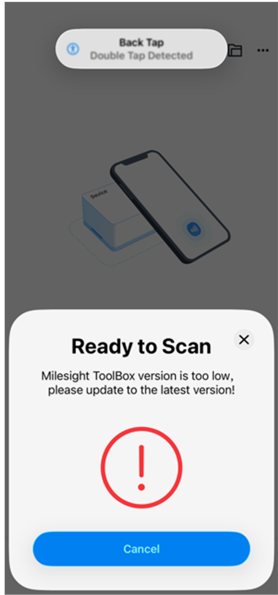
Checklist
Step 1: 使用USB-Type C 连接PC
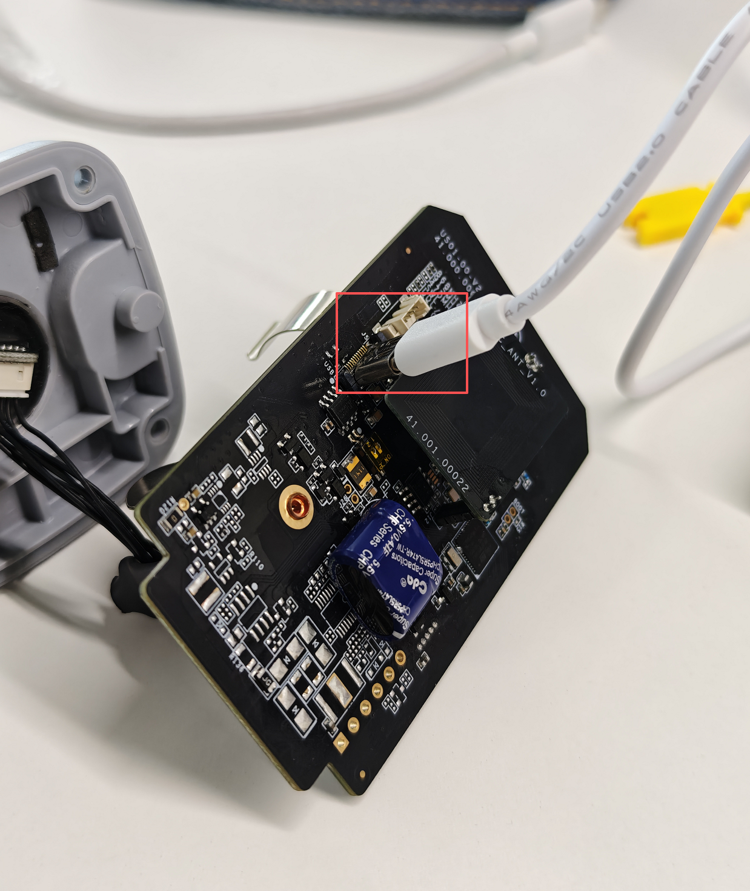
Step 2：打开TCPcom工具，发送下方的命令查看设备信息
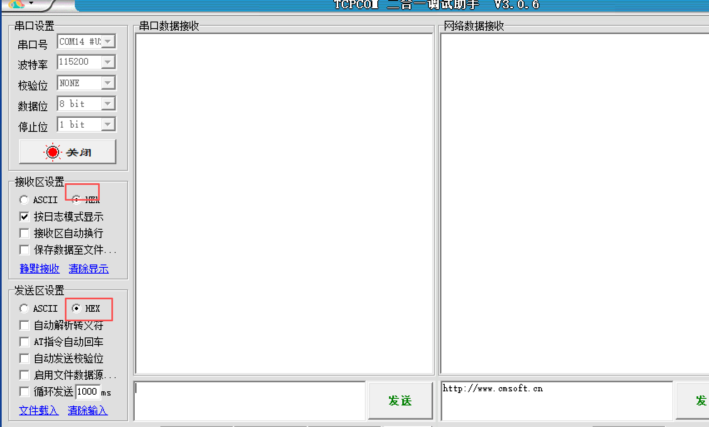
1. hex发送密码：
7E010B003132333435367E
2. 查询设备型号：
7E040600717E
3.查询设备SN：
7E040600727E
4.查询设备硬件版本：
7E040600737E
5.查询设备软件版本：
7E040600747E
| 由于返回的信息数值均是FFFF 这说明传感器上的固件信息已经丢失，因此手机NFC无法读取到这些信息，导致无法正常进入传感器toolbox 配置界面 | 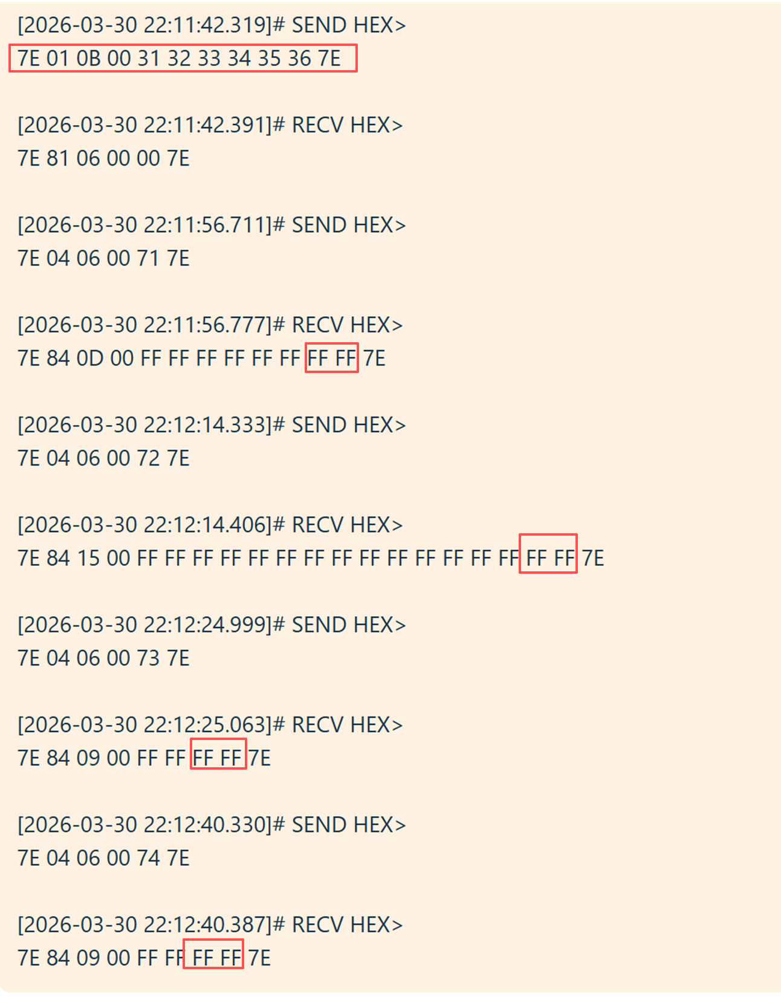 |
如果想了解完整的UCP协议规范，请参考UCP 协议规范V1.5 文档（企业微信搜索栏检索）
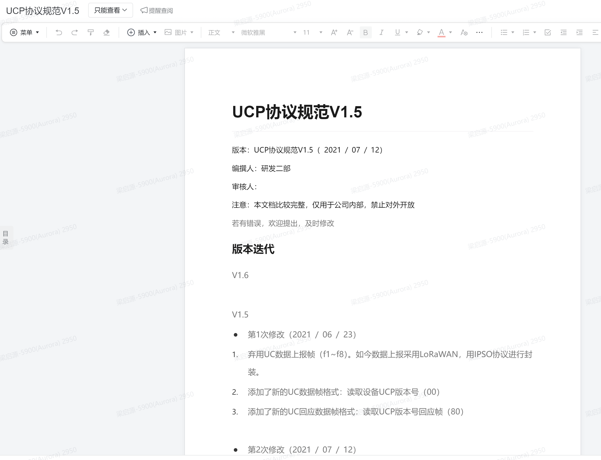
Step 3: 如果固件版本信息已经丢失，需要给传感器重新烧录固件才可以恢复传感器正常运行
烧录需提前获取EM500-LGT的烧录地址，硬件版本信息，ext2文件和特殊的bin文件(该bin文件由bin文件烧录工具生成)
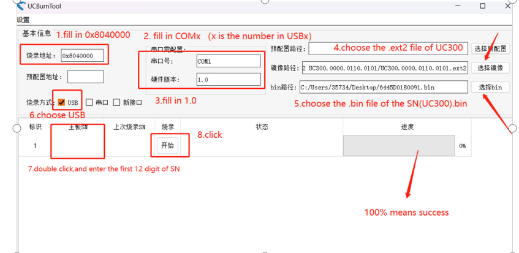
获取烧录地址
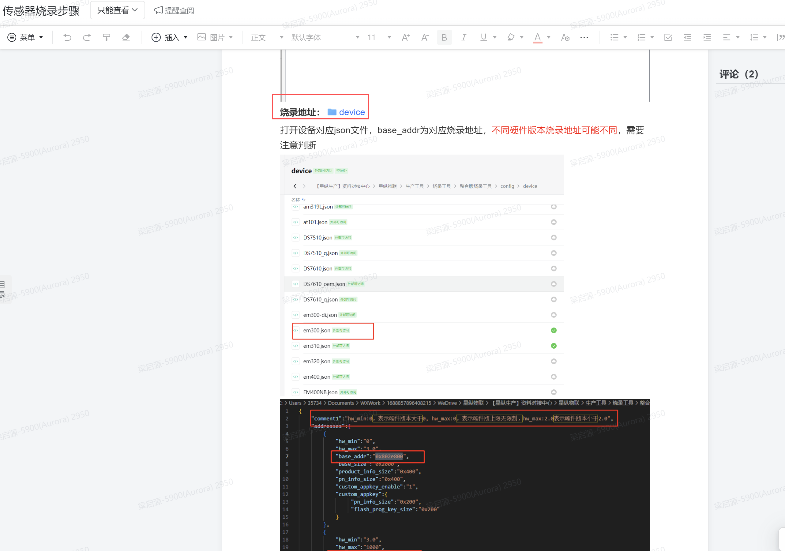 |
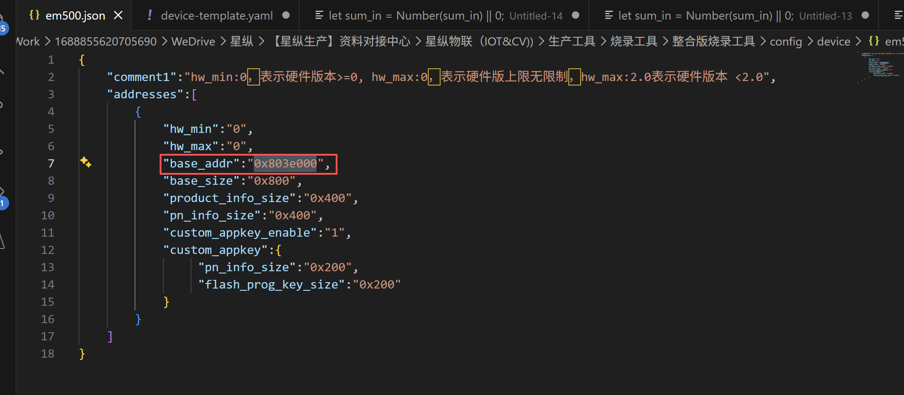
生成特殊的bin文件
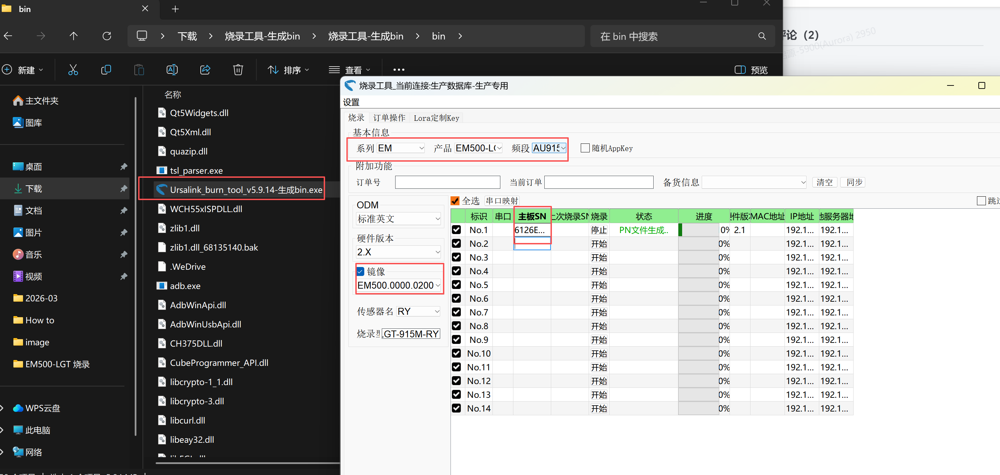
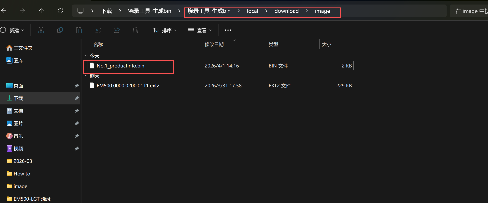
从NAS 上下载最新的EM500 ext2 文件，请注意特殊bin文件生成时选择的固件版本要与NAS上下载的ext2 文件固件版本一致
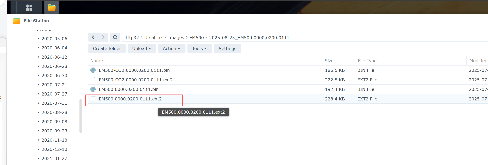
输入烧录地址，COM号，ext2文件和bin文件，最后填入SN(前12位)，开始烧录，进度条显示100%后表示烧录成功
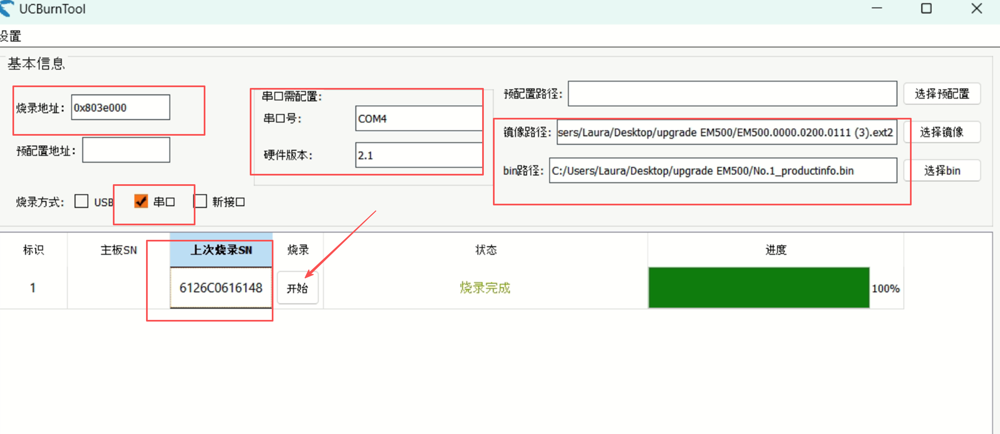
烧录成功后，再次使用手机NFC 读取传感器，成功登录：
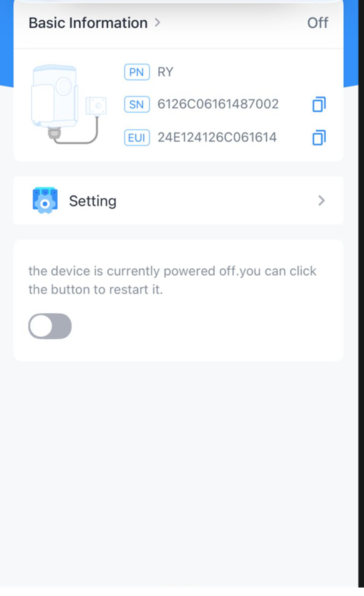
----END----